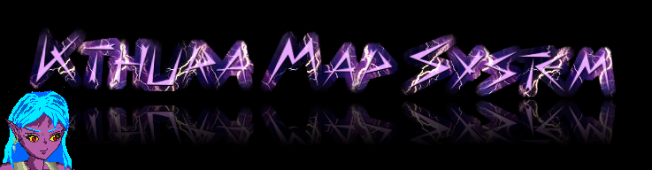

| tricky_kthura.kthura_core: | Globals | Functions | Types | Modinfo | Source |

NOTICE!!!
This module is still in development so many features will not work properly. Or most likely not at all.
I recommend not to use this module until this notice has been removed
This module is written in order to load Kthura maps into BlitzMax. The Kthura system was named after the main protagonist of the adventure game Mörker as that was the first game to use this system.
| Kthura_SetCam , KthuraError , KthuraWarning |
| LoadKthura | Load Kthura map. |
| TKthura | This type is used to store a level set up in Kthura. |
| TKthuraActor | This type is used for actors in a Kthura Map. It's an extended TKthuraObject as actors have some additional data which you won't need in the other objects. |
| TKthuraObject | This type contains data of an object within a Kthura map. |
| Global Kthura_SetCam(X,Y) | |
| Description | This function can be used to allow the Kthura loader to define the camera by the map settings in the map file. Just replace it with your own function to make this happen. |
| Information | This function is only meant for editors. If you are not writing an editor, you can best ignore this function. |
| Global KthuraError(ErrMessage$) | |
| Description | This function is called whenever an error occurs within Kthura. If you want you can replace this function in order to create your own error routines for Kthura. |
| Global KthuraWarning(WarnMessage$) | |
| Description | This function is called whenever Kthrura sends out a warning. If you want you can replace this function in order to create your own warning routines for Kthura. |
| Function LoadKthura:TKthura(url:Object,prefix$="",AltTextJCR:TJCRDir=Null) | |
| Description | Load Kthura map. |
| Information | File can be either a file name or a TJCRDir map. The prefix is mostly used for entering pathname within the JCR file in which the the Kthura map has been stored. AltTextJCR can be used if you used a separate JCR file or a regular directory to store your textures. Personally I only placed it in to make this routine work well with the editor, since if your maps and textures are in the same JCR file, you should just ignore this parameter! |
| Type TKthura | |
| Description | This type is used to store a level set up in Kthura. |
| Methods Summary | |
|---|---|
| Block | False if a pixel is free, True if a pixel is blocked. |
| BuildBlockmap | Builds the blockmap. |
| CoordInObject | Is a coordinate within an object or not. |
| CoordInObjectFromTag | Retrieve an object from a tag and performs a check if the coordinate is within the object or not. |
| CountMovingActors | Counts all actors currently moving. (Actors set on the move with both WalkTo and MoveTo will be counted). |
| CountWalkingActors | Counts all actors currently walking (basically what the name implies). |
| CreateActor | Creates an actor on the given coordinates and returns it. |
| GetObjectByID | Gets an object through searching by ID number. |
| GetObjectByTag | Gets an object by searching for a tag! |
| GiveTag | Sets a new tag. |
| HideLabel | Shows all objects containing a certain label. |
| RemapDrawMap | This function recalculates the entire drawmap. |
| RemapLabelMap | This function recalculates the entire label map and foreign map. |
| RemapTagMap | This function recalculates the entire tagmap. |
| RemoveActors | Remove all actors from a Kthura map. |
| ReTag | Finds an object with a certain tag and gives it a new tag. |
| ShowLabel | Shows all objects containing a certain label. |
| ShowOnlyLabel | Show all objects only containing the labels. |
| SpawnActor | Creates an actor by using an 'entrace' or 'exit' spot. |
| TotalRemap | Remaps everything. |
| Method Block(X,Y) | |
| Description | False if a pixel is free, True if a pixel is blocked. |
| Information | Please note that this method only works well, if the blockmap is built (or loaded from a kthuramap). This one works it out from the pixel, not the BlockMap Grid, however, the smaller the grid, the more precize this feature becomes (although it's more memory eating, so think well where you put your emphasis). |
| Method BuildBlockmap() | |
| Description | Builds the blockmap. |
| Information | This can happen automatically when placing, removing, moving or reshaping any object. Please note that overusing this will slow down the performance. Most functions calling this can be instructed not to do so and so you can save it for last if you do multiple modifications. Please note that objects with coordinates lower than 0 will have the coordinates set to 0 in the blockmap calculation. There is no official limit in the height of coordinates, but please keep in mind that going overboard in that, can be very demanding on your memory. The blockmap builds the map on a 32x32 pixel grid by default. You can set the BlockmapGridW and BlockMapGridH variables (which are field vars of your tKthura map) to adjust this, please keep in mind, the lower the number, the more memory this will take up, so handle with care. |
| Method CoordInObject(KObject:TKthuraObject,x,y) | |
| Description | Is a coordinate within an object or not. |
| Information | This function will check based on the object type if a coordinate is within an object or not. Currently supported objects: Zone, TiledArea, Obstacle. returns: True if this is the case, and False if not. (duh) Unsupported object types will always return False. |
| Method CoordInObjectFromTag(Tag$,x,y) | |
| Returns | True if this is the case, and False if not. (duh) |
| Description | Retrieve an object from a tag and performs a check if the coordinate is within the object or not. |
| Method CountMovingActors() | |
| Description | Counts all actors currently moving. (Actors set on the move with both WalkTo and MoveTo will be counted). |
| Method CountWalkingActors() | |
| Description | Counts all actors currently walking (basically what the name implies). |
| Method CreateActor:TKthuraActor(X,Y,Pics$,Tag$,SorB=1,Update=True) | |
| Description | Creates an actor on the given coordinates and returns it. |
| Information | SorB means 'single' or 'bundle'. 0 = single and 1 = bundle. A single picture can be animated, but it is only one picture. A bundle is read from an entire JCR6 directory and the files are stored stripped from the full path name and picture extention (case insensitive) in a library tied to this picture. I need to note that if the bundle contains MyPicture.png and MYPICTURE.JPG that they will both stored on the same spot and that the last one read (due to the alphabetic nature of JCR6 that will be MyPicture.png) will be kept. Keep this very important part in mind! (Also note that the Pic Bundle reader does not find the files recursively) |
| Method GetObjectByID:TKthuraObject(ID) | |
| Description | Gets an object through searching by ID number. |
| Information | Returns the object if it exists, otherwise it returns 0. |
| Method GetObjectByTag:TKthuraObject(Tag$) | |
| Description | Gets an object by searching for a tag! |
| Method GiveTag(O:TKthuraObject,tag$) | |
| Description | Sets a new tag. |
| Information | Each tag must be unique. Giving this object a tag which already exists will cause an error. You don't need to remap the tags, as this routine will automatically update the tagmap and in a faster manner than RemapTagMap does too. Oh yeah, tags are case sensitive! |
| Method HideLabel(labels$) | |
| Description | Shows all objects containing a certain label. |
| Information | All labels should be in one string separated by commas. |
| Method RemapDrawMap() | |
| Description | This function recalculates the entire drawmap. |
| Information | This function can when you use it a lot slow down your program performance so it should only be used when you need to. When a new object is created this function is called automatically. Because of that it can sometimes be a faster solution to have all objects created from the start but have them outside of the screen and move them in screen, in stead of creating objects in-game real-time. |
| Method RemapLabelMap() | |
| Description | This function recalculates the entire label map and foreign map. |
| Information | This function can when you use it a lot slow down your program performance so it should only be used when you need to. When a new object is created this function is called automatically. Because of that it can sometimes be a faster solution to have all objects created from the start but have them outside of the screen and move them in screen, in stead of creating objects in-game real-time. |
| Method RemapTagMap() | |
| Description | This function recalculates the entire tagmap. |
| Information | This function can when you use it a lot slow down your program performance so it should only be used when you need to. When a new object is created this function is called automatically. Because of that it can sometimes be a faster solution to have all objects created from the start but have them outside of the screen and move them in screen, in stead of creating objects in-game real-time. |
| Method RemoveActors() | |
| Description | Remove all actors from a Kthura map. |
| Method ReTag(OldTag$,NewTag$) | |
| Description | Finds an object with a certain tag and gives it a new tag. |
| Method ShowLabel(labels$) | |
| Description | Shows all objects containing a certain label. |
| Information | All labels should be in one string separated by commas. |
| Method ShowOnlyLabel(Labels$) | |
| Description | Show all objects only containing the labels. |
| Method SpawnActor:TKthuraActor(Spot$,Pics$,Tag$,SorB=1,Update=True) | |
| Description | Creates an actor by using an 'entrace' or 'exit' spot. |
| Information | In basic speaking, ANY object can be used as a start spot, as long as it has a tag (as that what we respond to here). Though it's recommended to ONLY use entrance/exit points as you may turn things into chaos if you don't. (Please note "Spot" refers to the tag of the object we should spawn upon. "Tag" refers to the tag of the actor itself). The advantage of this routine that it also copies the dominance setting and some other data tied to the entrance point. |
| Method TotalRemap() | |
| Description | Remaps everything. |
| Information | Using this too much may slow down your game, so only use this when you really need to. |
| Type TKthuraActor Extends TKthuraObject | |
| Description | This type is used for actors in a Kthura Map. It's an extended TKthuraObject as actors have some additional data which you won't need in the other objects. |
| Methods Summary | |
|---|---|
| IncFrame | Increases frame of the current picture. |
| MoveTo | Makes the character walk to a target position. |
| WalkTo | Makes an actor walk to a target position. |
| Method IncFrame(IncValue=1) | |
| Description | Increases frame of the current picture. |
| Method MoveTo(TX,TY,TIngoreBlocks=False) | |
| Description | Makes the character walk to a target position. |
| Information | Contrary to WalkTo, MoveTo uses a rather primitive way to find the way and the character will not be able to find the way when there are obstacles in the way. The character will simply stop moving upon touching those. An advantage of this routine is that it's able to be more precize than WalkTo. Please note the routine should not be used when the character is already walking with WalkTo, or you may get some very odd behavior. |
| Method WalkTo(TX,TY) | |
| Description | Makes an actor walk to a target position. |
| Information | If the target coordinates are impossible to reach, your request will simply be ignored. |
| Type TKthuraObject | |
| Description | This type contains data of an object within a Kthura map. |
| Methods Summary | |
|---|---|
| Move | Moves an object. |
| Reform | Moves and reshapes. |
| ReShape | Set the a new size for the object. |
| Method Move(nx,ny,updateblockmap=True) | |
| Description | Moves an object. |
| Information | You won't have to remap the drawmaps as that will happen automatically, however rebuilding the blockmap can be in order, which will happen here. If you want to make multiple movements you can turn it off, but then it will have to happen after the last change you make or the way the player can or cannot walk to will act very strangely. |
| Method Reform(nx,ny,nw,nh,UpdateBlockMap=True) | |
| Description | Moves and reshapes. |
| Method ReShape(nw,nh,updateblockmap=True) | |
| Description | Set the a new size for the object. |
| Author | Jeroen P. Broks |
|---|---|
| Copyright | (c) 2015-2015 Jeroen P. Broks |
| License | Mozilla Public License 2.0 |
| Notice | The character 'Kthura' which this system is named after and the world and stories she belongs to are property of Jeroen P. Broks and may only be used with his permission. The name 'Kthura' may freely be used in any system related to the Kthura engine as long as it clearly refers to this system and not to the actual character |
| Version | 15.05.27 |
| Quote | How appropriate! You fight like a cow |